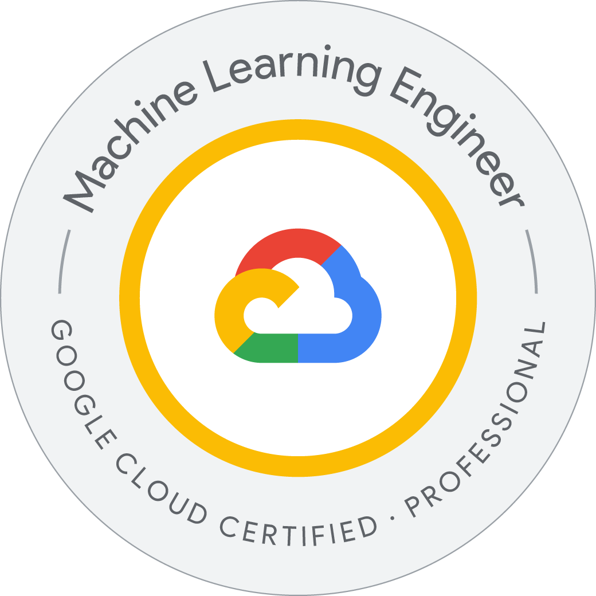

Professional Machine Learning Engineer
Google Cloud
Professional certification
Overview
This professional certification covers building and operating machine-learning and AI solutions on Google Cloud, from low-code modeling to production systems. Its current blueprint includes BigQuery ML and AutoML, model selection and adaptation, dataset preparation, notebook experimentation, training infrastructure, batch and online inference, pipeline automation, and production monitoring. It also includes generative-AI solution evaluation, prompt and context engineering foundations, responsible AI, and protections for data and models. The scope is organized around architecture, collaboration, scaling, serving, orchestration, and monitoring.
A Professional Machine Learning (ML) Engineer builds, evaluates, productionizes, and optimizes AI solutions using Google Cloud capabilities
Syllabus & skills
- Low-code AI with BigQuery ML, AutoML, and model APIs
- Data exploration, privacy, feature handling, and notebook prototyping
- Model choice, training, tuning, and compute selection
- Batch and online inference, endpoint security, and serving scale
- Pipeline orchestration, retraining, metadata, and lineage
- AI safety, explainability, drift, and production evaluation
Issuer documentation
Professional Machine Learning Engineer — Google Cloud
Google Cloud
See Source